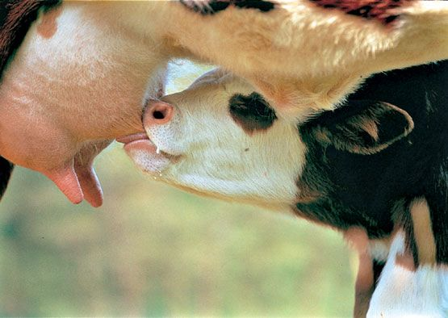
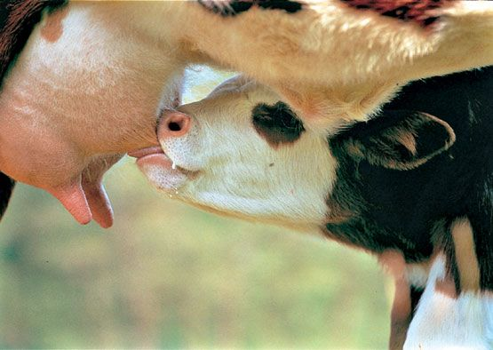

El ciclo de lactación comienza tras el parto y se extiende hasta el período seco. Es clave para la salud de la vaca y la rentabilidad del tambo.
Carrera: TUOEA
Asignatura: Producción de Carne y Leche Bovina
Tema: Ciclo de lactación y período seco
Integrantes – Grupo 25:
Equipo Docente:
Fecha de entrega: Martes 09/09/2025
El ciclo de lactación comienza tras el parto y se extiende hasta el período seco. Es clave para la salud de la vaca y la rentabilidad del tambo.
Un ciclo de lactación bien manejado asegura alta producción y longevidad del rodeo. El período seco es esencial para preparar la próxima lactancia. El Técnico equilibra bienestar animal y eficiencia económica.